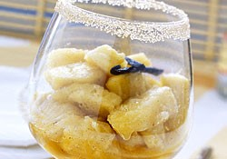

⮜⮜
Blanc manteau mangue ananas
Pour 1 Personnes,
Temps de préparation : ,
Temps de cuisson : ,

Ingrédients
- 100 g d'ananas surgelé coupé en dés (ou frais, c'est mieux)
- 1/4 mangue mûre
- 5 cl de lait de coco
- 1/2 c. à café d'agar agar
- 1 c. à soupe de raisins secs
- 1/2 tranche de pain d'épices
- 1 c. à soupe de poudre de noix de coco
- 1/2 fève de tonka (ou poudre de vanille)
- 1/2 bouchon de rhum
Préparation
- Laissez macérer les raisins avec le rhum quelques minutes.
- Faites chauffer le lait de coco et une fois bien chaud y ajouter l'agar agar et portez à ébullition.
- Ajoutez 200g d'ananas et laissez cuire 3 minutes pour que l'ananas soit bien décongelé.
- Eteignez le feu.
- Mettez la préparation au robot et mixez pour obtenir une crème à l'ananas.
- Dans des ramequins, mettez 1 cuillère à soupe de raisins secs au rhum, versez la crème par dessus et placez au frais au minimum 4 heures.
- Avant de servir : mixez les tranches de pain d'épices.
- Sur chaque crème, mettez 1 cuillère à soupe de pain d'épices. Déposez ensuite des morceaux/dés de mangue et parsemer d'une cuillère à soupe de poudre de noix de coco et de fève de tonka râpée. Servez.
Remarques